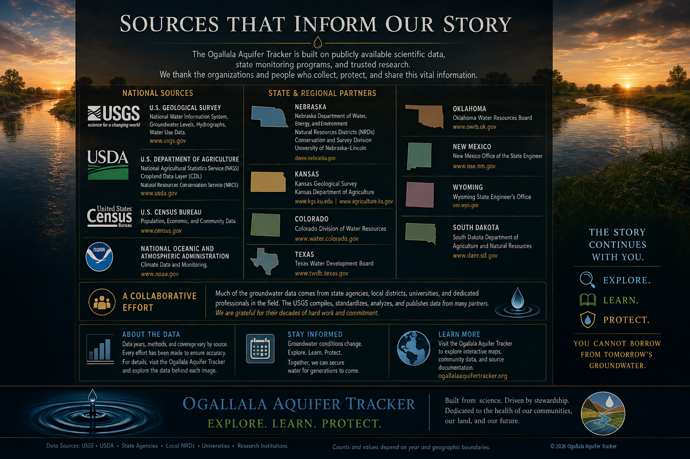

Groundwater science
U.S. Geological Survey — High Plains Water-Level Monitoring Study
Aquifer-wide monitoring and water-level change from predevelopment to the present, produced with local, state, and federal cooperators.
Open USGS study ↗
Verified visual directory: the verified Version 3.1 poster remains the current visual source directory in Version 3.2. It was corrected against this live directory on August 12, 2026. The live HTML directory below is the controlling record when agency names, programs, or web addresses change.
No single organization owns the aquifer story. USGS provides basin-scale science and monitoring; state agencies administer water programs and maintain state datasets; local districts and universities add detail that makes regional information useful on the ground.
Measured data, Tracker interpretation, and scenarios are kept separate. Working indices are communication tools—not percentages of water remaining. Present-day infrastructure is context, not automatic attribution. Future views are labeled scenarios unless a source specifically supports a forecast.
Aquifer-wide monitoring and water-level change from predevelopment to the present, produced with local, state, and federal cooperators.
Open USGS study ↗Selected wells and annual groundwater-level information contributed by USGS and numerous partner agencies.
Open groundwater network ↗Conservation science, technical standards, and voluntary assistance for soil, water, working lands, and habitat.
Open NRCS ↗Population, housing, economic, and community data used for geographic and demographic context.
Open Census data ↗Quality-controlled historical weather and climate records, including precipitation and long-term climate normals.
Open NOAA climate data ↗Nebraska Department of Water, Energy, and Environment; Nebraska Natural Resources Districts; University of Nebraska–Lincoln Conservation and Survey Division.
Kansas Geological Survey and Kansas Department of Agriculture Division of Water Resources.
Water-right administration, groundwater permitting and enforcement, records, and technical support for eastern Colorado designated basins.
Groundwater levels, quality, well records, aquifer studies, regional-scale models, and groundwater planning information.
State groundwater data, wells, monitoring resources, standards, and mapping.
Water-right administration plus statewide groundwater-level monitoring in cooperation with USGS.
Groundwater permitting, observation-well monitoring, aquifer investigations, records, and water-right administration.
Groundwater quality monitoring, data and mapping, environmental programs, and state water-resource information.
“You cannot borrow from tomorrow’s groundwater.”
Credibility means showing what we know, where it came from, what we inferred, and where the evidence stops. The source list will be reviewed as the Tracker evolves.